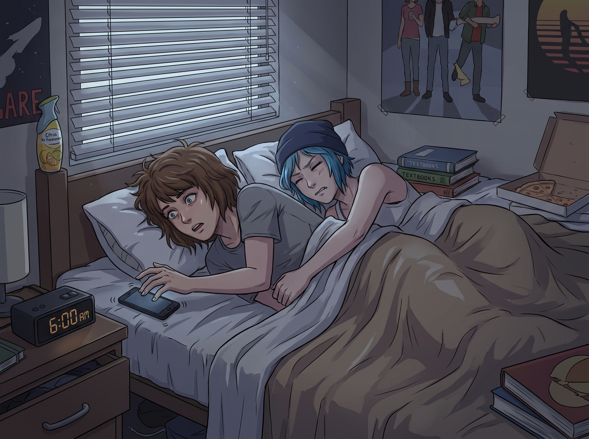

清晨大逃亡

清晨六點整，枕頭底下的手機發出宛如蜂鳴般的微弱震動。
Max 猛地睜開眼，第一反應是以極快的速度一把按死鬧鐘。灰濛濛的晨光穿過百葉窗縫隙，宿舍裡還殘留著淡淡的柑橘香氣與披薩油脂味。身旁的 Chloe 還在把頭埋在枕頭裡發出不滿的咕噥聲，修長的手臂死死箍在 Max 的腰上。
「Chloe……醒醒，六點了。」Max 壓低聲音，一邊推著身邊沉得像塊鐵錨的藍髮女孩，一邊慌亂地伸手去摸散落在地板上的衣服，「宿管阿姨六點半就換班了，我們必須在六點十五分前溜出大門！」
「唔……五分鐘……」Chloe 閉著眼把 Max 往懷裡撈，聲音沙啞得帶著濃濃的鼻音，「老娘的發動機還沒預熱……」
「沒有五分鐘了！要是被抓到，我的暗房通行證會被直接吊銷一學期！」
一、極限特工撤退
五分鐘後，一場極限特工級別的撤退行動在寢室內無聲展開。
Chloe 睡眼惺忪地套上皮夾克，一邊把昨天拆解的重型工具塞回背包，一邊把空披薩盒踩扁塞進大垃圾袋裡；Max 則以驚人的敏捷度將床單拉得平整如新，順便把窗戶推開一條縫散去氣味，最後將相機包和暗房作業袋挎在肩上。
「檢查裝備，」Max 站在門後，像個如臨大敵的特種部隊指揮官，轉頭嚴肅地對 Chloe 比劃手勢，「鞋帶繫緊、背包拉鍊拉上、絕對不准發出任何金屬碰撞聲。」
Chloe 嚼著剛塞進嘴裡的薄荷糖，忍不住翻了個白眼，伸手在 Max 鼻尖上刮了一下：「遵命，考菲爾德長官。」
「咔噠。」
門鎖被極其緩慢地擰開，兩人像影子一樣滑進了空無一人的走廊。
二、洗衣房驚魂
藝術學院宿舍鋪著老舊的深綠色防滑地膠，清晨安靜得連一根針掉在地上都能聽見。兩人並排貼著牆根前進，Chloe 甚至為了防止工裝靴後跟發出踏步聲，不得不踮起腳尖走路，一米七五的個子貓著腰，姿勢滑稽得像一隻正在偷油的大藍貓。
路過走廊中段時，盡頭突然傳來一陣金屬鑰匙串清脆的撞擊聲與沉重的拖鞋腳步聲——
「早班巡查……」Max 倒吸一口涼氣，臉色刷白，抓著 Chloe 的衣角就要往消防栓後面縮。
千鈞一髮之際，Chloe 一把拽住 Max 的手腕，閃身躲進了走廊轉角的公共洗衣房門簾後。
腳步聲由遠及近。那位戴著老花鏡的宿管阿姨手裡拿著巡查板，慢悠悠地從洗衣房門口走過，嘴裡還哼著不知名的小調。門簾後，Chloe 緊緊將 Max 圈在懷裡，後背抵著一台正在低鳴的烘乾機，低頭看著懷裡緊張得連呼吸都屏住的棕髮女孩，嘴角瘋狂上揚，甚至故意低下頭在 Max 泛紅的耳廓上輕輕吹了一口氣。
Max 羞憤地瞪大眼睛，狠狠掐了一把 Chloe 的手側，用眼神發出無聲的咆哮：「Chloe Price！你想死嗎？！」
直到腳步聲徹底消失在四樓樓梯間，兩人才長長吐出一口氣，宛如脫兔般從門簾後躥了出來，順著安全通道一路狂奔直下底層。
三、成功撤退
「叮。」
大廳側面的緊急逃生門被推開，清晨微涼而濕潤的波特蘭空氣瞬間灌入肺腑。
外面的天色剛泛起魚肚白，街道上空無一人，只有灑水車在遠處緩緩駛過。停在路邊的那輛老雪佛蘭皮卡上覆蓋著一層薄薄的晨露。
「哈！撤退成功！」Chloe 一腳跨過路牙，拉開老皮卡副駕駛的車門，把 Max 一把推進去，隨後自己繞到駕駛座跳上車，重重關上車門，發出肆無忌憚的暢快大笑，「看見剛才老太婆的表情了嗎？老娘簡直就是當代穿牆大師！」
Max 靠在散發著皮革與暖氣味道的座椅上，大口喘著氣，扶了扶跑歪的眼鏡，看著身邊笑得一臉猖狂的藍髮女孩，也終於忍不住跟著笑了起來：
「是啊，穿牆大師……不過現在，立刻、馬上帶我去喝一杯雙份濃縮咖啡，我的心跳到現在還在以每分鐘一百八十次的速度超頻運轉。」
「收到，長官！」Chloe 猛地一擰車鑰匙，老皮卡的 V8 發動機發出一聲低沉悅耳的轟鳴，車輪碾過潮濕的落葉，朝著威拉米特河畔散發著現烤熱鬆餅香氣的早市飛馳而去。